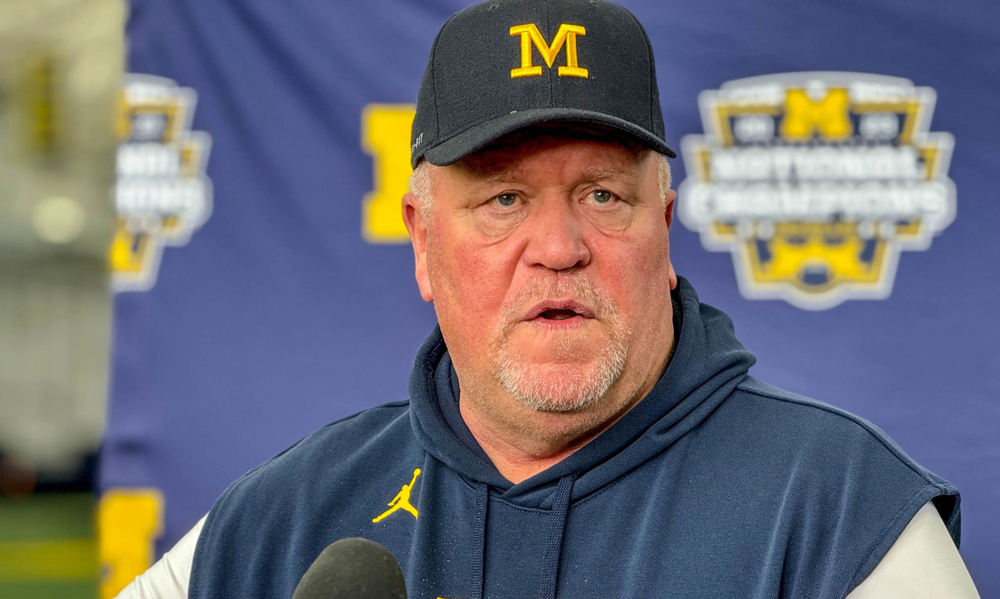

Bienvenido a la Academia
Mike Vrabel es el encargado principal de Raven Elite Football Academy. Su enfoque se basa en la disciplina, la preparación física y el desarrollo técnico y personal de los jugadores.
Descubre su trayectoiaAcerca de nosotros
Raven Elite Football Academy es una academia de alto rendimiento especializada en la formación integral de jugadores de fútbol americano. Nuestro enfoque combina entrenamiento técnico, preparación física y desarrollo táctico, promoviendo valores como la disciplina, el esfuerzo y el trabajo en equipo. La academia está dirigida a deportistas que buscan mejorar su rendimiento en un entorno profesional y estructurado.
Nuestros jugadores estarán acompañados por un staff cualificado, formado por jugadores, entrenadores y preparadores físicos, comprometidos con el desarrollo deportivo y personal de cada atleta.
- High School: 12-15 años
- College: 15-19 años
- NFL: 19-30 años
- High School: L-V: 15:00-15:00 S-D: 12:00-13:00
- College: L-V: 11:00-13:00 S-D: 16:00-18:00
- NFL: L-V: 18:00-21:00 D: 17:00-21:00
Conoce al staff
Arthur Smith
Arthur Smith es un entrenador reconocido por su enfoque en el juego terrestre y el desarrollo de running backs de alto nivel. Su trabajo en la academia se centra en esquemas ofensivos equilibrados, aprovechando la potencia, la visión y la toma de decisiones de los corredores..
Descubre su trayectoria
Wink Martindale
Wink Martindale es un entrenador reconocido por su enfoque defensivo agresivo y su capacidad para diseñar esquemas de presión efectivos. Su trabajo en la academia se centra en la lectura ofensiva, la colocación táctica y la técnica defensiva
Descubre su trayectoriaDr. Michael Gervais
El Dr. Michael Gervais es un especialista en rendimiento mental y psicología deportiva, centrado en ayudar a los jugadores a desarrollar confianza, concentración y control emocional. Su trabajo se enfoca en preparar a los atletas para competir bajo presión, mejorar la toma de decisiones y fortalecer la mentalidad competitiva dentro y fuera del campo.
Descubre su trayectoriaDr. John Berardi
El Dr. John Berardi es un especialista en nutrición deportiva, enfocado en optimizar el rendimiento físico a través de la alimentación. En la academia, trabaja en la planificación nutricional, la mejora de la recuperación y la creación de hábitos saludables, ayudando a los jugadores a alcanzar su máximo nivel de forma segura y sostenible.
Descubre su trayectoria